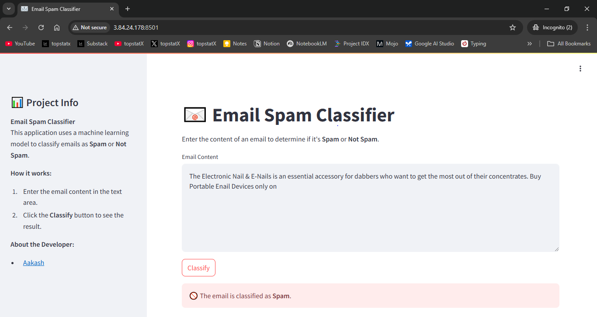
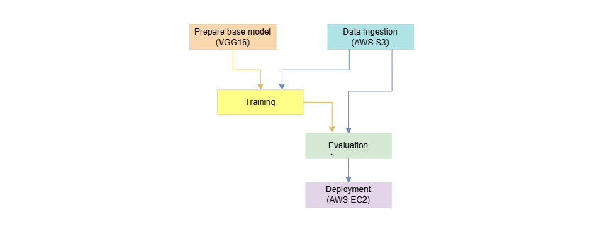

End-to-end Email Spam Detection
This project is an end-to-end email spam classifier designed to filter out unwanted emails. By leveraging machine learning algorithms, the classifier distinguishes between spam and legitimate emails, thereby enhancing email management and user productivity.

Key Features
- Deployed on AWS EC2
- Trained on over 80K training examples
- Achieved 97% acccuracy and 98% precision
- Automated CI/CD pipeline with Github Action
- Real-time inference capabilities
- Highly flexible desing, can be extended easily
Challenge
- Create a model with high precision and high accuracy
- Use limited computational resources
- Handle over 80k training examples
Solution
- Used a Voting ensemble technique to create a voting classifier of Logistic Regression and MultinomialNB
- Employed TFIDF vectorization
- Kept data dimensions low while maintaining good performance
Technical Implementation
The overall project lifecycle is divided into five key steps, Data ingestion, preprocessing, Model training, Model evaluation, Deloyment on aws through CI/CD pipelines
Technologies Used
🛠️ Core & Backend
Python Streamlit🧠 Machine Learning
scikit-learn NLTK📦 Contarization & Experiment Tracking
Docker🔍 Pipeline Tracking
DVC🔧 Version control and CI/CD
Git Github Actions☁️ Cloud & Deployment
Docker AWS EC2 AWS ECRSystem Architecture
1. Data Ingestion
- Data collection from Kaggle
- Data has over 80K training examples
- Implementation of data version control using DVC
2. Preprocessing
- Basic text preprocessing like lowecasing, stemming, stopword removal
- train test split
3. Model Training
- Trained on Voting ensemble of Logistic Regression and MultinomialNB algorithm
- Hyperparameter optimization
4. Model Evaluation
- Comprehensive metrics tracking, accuracy and precision
- Performance benchmarking
5. Deployment
- Containerization using Docker
- Automated CI/CD pipeline with GitHub Actions
- AWS EC2 deployment with auto-scaling
- Monitoring and logging setup
Results & Impact
- 97% classification accuracy and 98% precision on test dataset
- Successfully deployed in AWS EC2